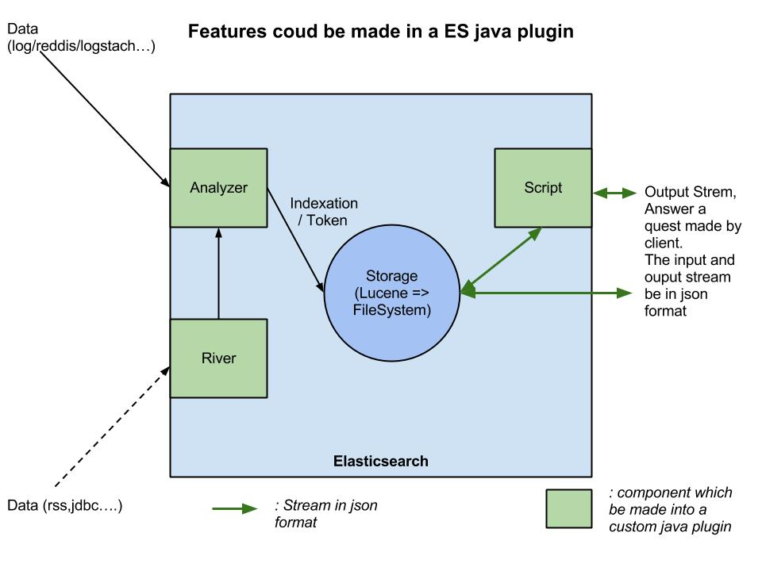

This project is could be see like a "template" to developped java plugin for Elasticsearch. It implements a 3 basics kind of component which could be present in a specific custom plugin. This 3 component is illutrated in this schema : 